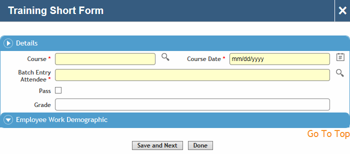

A short form allows for quick capture of key training session details, especially if you do not need to capture cost information or if there was only one employee attending; for example, an off-site course, or computer based training (CBT).
On the Training Sessions list, choose Actions»Training Short Form.

Select the course date, course name, and employee.
Indicate if the employee passed and enter the grade attained.
Click Save and Next to record another session, or click Done. The session is added to the Training Sessions list, and can be edited if required.